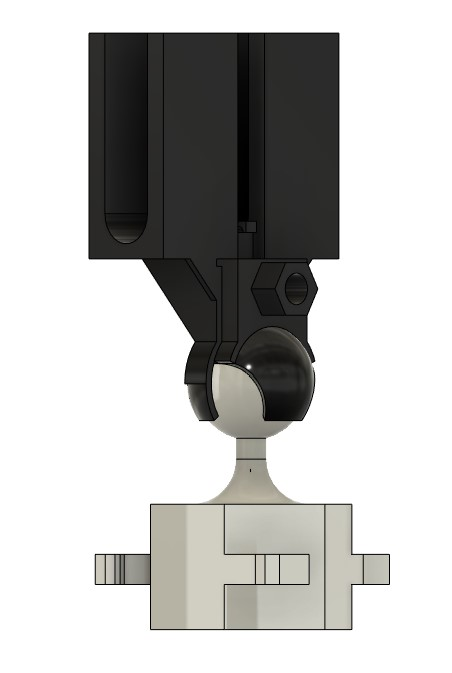

Project 3:
Ball joint with bracket
Introduction:
For projects 2 and 3, I decided to make two seperate components of a single assembly, that being an adjustable tripod for a mobile phone. The mount, which is designed to be a camera mount, is made up of a laser cut leg assembly, and a 3D printed bracket for holding the phone.
Project 3 will focus mostly on the 3D printed bracket, although the leg assembly from Project 2 may be referenced when applicable.
Step 1: Design parameters
Much of the design is still based off the thickness variable from project 2, although the ball joint itself, and the mounting bracket are of a defined absolute size, with the ball joint being of a fixed radius, and the bracket being constrained directly to the ball joint. This was done both to stay within the allowed mass limit, and to ensure that the bracket would fit the size of a normal phone.
The assembly also uses a couple of external components, those being a 4mm bolt, and nut, as well as a rubber band, which are required to fit for the product to be functional.
Step 2: Base
The base of the bracket is hexaognal, which means it fits with the flat surfaces on the tripod, while it still being possible to twist the shape to lock it into place. The shape was extruded to the same length as the flat sides of the tripod, and the inside hollowed out to minimize material use and weight.
Step 3: Snap-on arms
The bracket was then fitted with snap-on arms, which lock into the notches on the legs. Each armature features a small lip, which locks the components into place, and keeps the assembly from easily breaking apart. The arms are set to be radially symmetrical, based on the centreline.
Step 4: Ball joint
At the top of the base is added a neck, topped with a sphere that will serve as the "ball" part of the ball joint. The sphere has a diameter of 15mm.
Step 5: Main bracket
The main bracket is probably the most complicated, and important part of the entire assembly. At the base of the bracket is the rear part of the ball joint socket, which has some of the highest stresses of the entire object. It also serves as the holding bracket for the phone, and a retention socket for the bolt head, which will have to tolerate fairly high clamping forces.
The socket is set up so that the phone can be tilted backwards at a 70° angle, and to the sides at a 35° angle.
Step 6: Clamping bracket
The front of the socket is set up, so that, along with the main bracket, it will clamp on to the ball. That is achieved by tightening a winged nut through a hole which goes through both brackets. There is a small lip at the top of the clamping bracket, which levers the clamping force into the ball, and locks in the selected angle for the phone. The clamping bracket is designed, so that the phone can be angled downward at a 35°angle.
Step 7: Mounting bracket
The mounting bracket is designed to be space, and material efficient, with minimal parts. The U-shaped bend at the bottom of the bracket should allow it to accept a variety of phones up to 8mm thick. The phone is attached to the bracket using an elastic band, with attachment points for the elastic at the back and front of the bracket. Although not the most elegant solution, it minimizes moving parts, and maximizes simplicity.

Step 8: Full model
At this point the model is complete, and can be arranged for 3D printing.

Step 9: Construction
At the time of writing the construction process is incomplete.
Timeline:
Workshopping: 3 hours
Design: 4 hours
Layout: 1 hours
Construction: ??? hours
Website: 2 hours
References:
The design documents can be found here
Special thanks to Fossberg for giving me that very specific bolt I couldn't find anywhere else.
Final thoughts:
This project went completely off the rails. What started off as "Why not work on both projects at the same time?" turned into integration hell. At the current point the model is fairly stable, with the leg assembly being easily scalable by thickness, but some bugs persist in the mounting bracket.
Due to work commitments, I wasn't able to get the construction phase of the project done in time, but that will hopefully be finished by the end of this week.